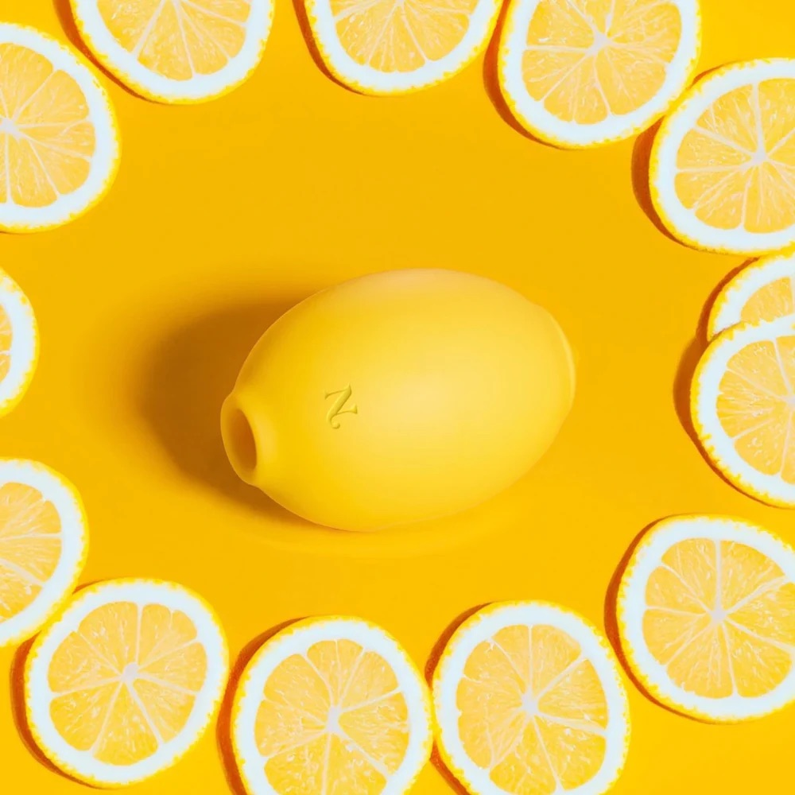
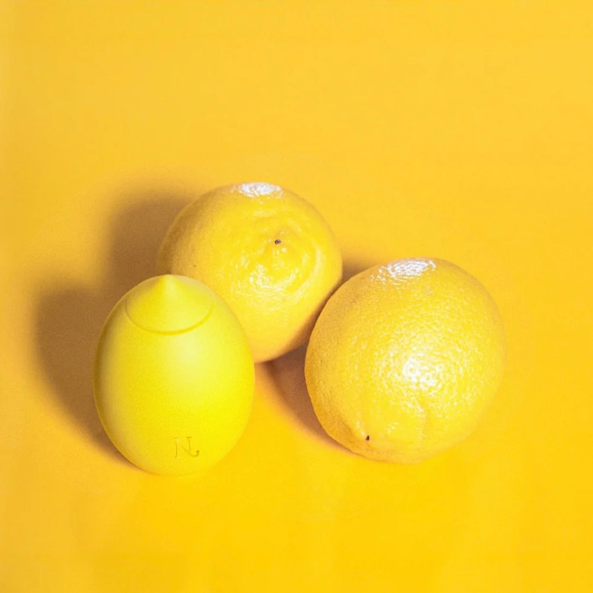
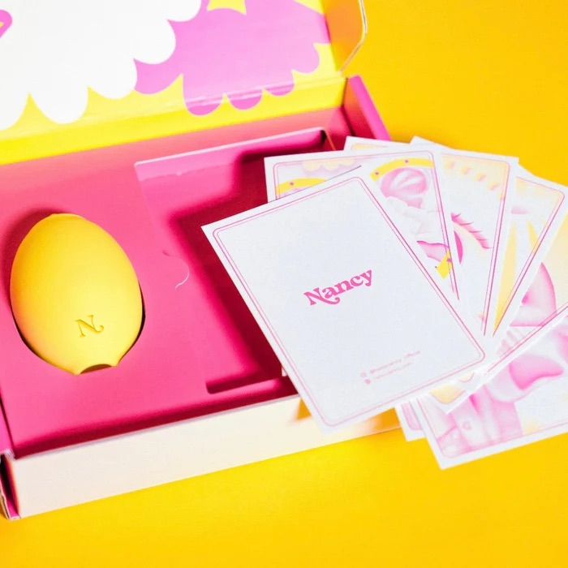
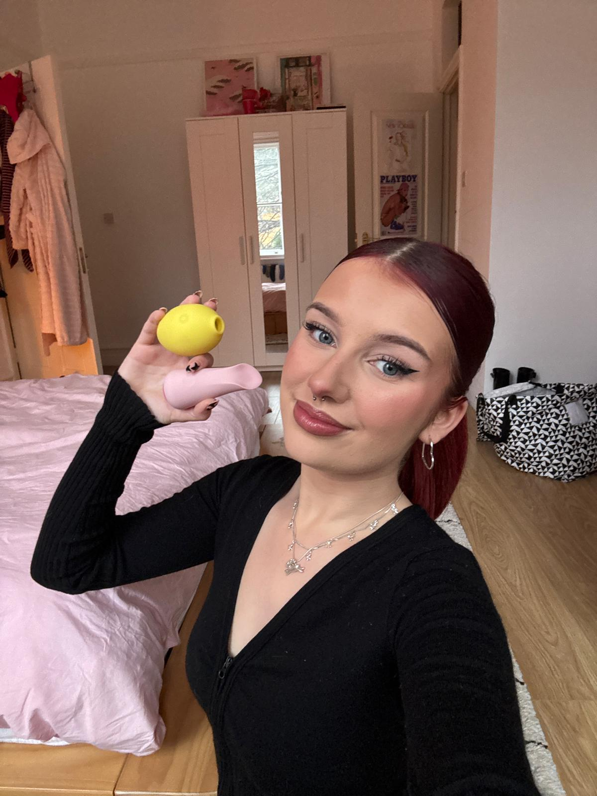

The "Lem" by Hello Nancy: Disguised as decor, designed for health.



As Seen On
My Doctor Called It 'Physical Therapy.' 18,217 Reviews Call It A Miracle.
"It's not a toy," she told me. Why thousands of women over 50 are ditching traditional vibrators for this strange 'Air Pulse' technology.
By Sarah Jenkins
Senior Health Editor
The Sex Toy Industry Has a Dirty Little Secret:
They Don't Care About Your Pleasure.
Walk into any adult store (if you dare), and you'll see walls of phallic, vibrating plastic. They are designed by men, for a fantasy of what women should feel. But for women over 40, these "traditional" toys aren't just ineffective—they are actively discouraging.
The Numbing Trap
Traditional vibrators rely on brute force. They buzz with such intensity that they numb your delicate nerve endings within minutes. You might climax, but it feels rushed, mechanical, and leaves you feeling desensitized.
The "Broken" Feeling
When a toy promises the world and delivers nothing but irritation, you don't blame the toy. You blame yourself. "Is something wrong with me?" (Spoiler: No, you aren't. The tool is wrong.)
The Shame Factor
Let's be honest—hiding a giant, buzzing, vein-covered silicone object in your nightstand feels... dirty. It feels like a secret you have to keep, rather than a wellness tool you're proud to own.
"You don't need 'more power.' You don't need 'more vibration.'
You need a completely different language of pleasure."
"Use It Or Lose It" Is A Myth.
You Just Need Blood Flow.
Did you know the clitoris has 8,000 nerve endings? That's double what men have. But without blood flow, those nerves go dormant.
The Menopause Block
Lower estrogen means constricted blood vessels. Nerves go to sleep, leading to that "dead" feeling and tissue atrophy.
The Lem Solution
Air Pulse technology acts like a "pacemaker" for your pelvic floor. It gently trains the blood vessels to dilate again without trauma.
The Result
Increased natural lubrication, heightened sensitivity, and the reversal of tissue atrophy with regular use.
Meet Lem: The First Intimacy Device Designed for the "Second Spring" of Womanhood
Lem isn't a vibrator. It's a Clitoral Resonator. It doesn't shake your body; it wakes it up.
Air Pulse Technology™ (The "Oral" Sensation)
Imagine the gentle, rhythmic sensation of a lover who knows exactly what they're doing—and never gets tired. Lem uses soft waves of air to massage the clitoris without direct contact. No friction. No irritation. Just pure, building pressure.
Whisper-Quiet Engineering
We know that relaxation is 90% of the battle. You can't relax if you're terrified someone will hear a buzzing motor. Lem operates at less than 50 dB—lower than a whisper. Your partner (or your guests) in the next room won't hear a thing.
Medical-Grade "Soft-Touch" Silicone
Your skin changes during menopause. It becomes thinner, more sensitive. Lem is coated in premium, velvety silicone that warms to your body temperature instantly. It feels like skin, not plastic.
12 "Symphony" Patterns
From a gentle flutter to a deep, rolling wave. Most women find their "forever setting" within the first 5 minutes—a rhythm that matches their body's unique frequency perfectly.
Why "Air" Is The Antidote to Atrophy
As estrogen levels drop, blood flow to the pelvic region decreases. This is what causes dryness, thinning tissue, and that "dead" feeling down there. Traditional vibrators try to force blood flow through aggressive shaking. Lem does the opposite.
1. The Seal
When you place Lem's soft mouth over your clitoris, it creates a gentle, airtight seal. This isn't just about contact; it's about creating a closed environment for pleasure.
2. The Vacuum Effect
The device creates a micro-vacuum. This negative pressure naturally draws fresh, oxygenated blood to the surface—instantly plumping the tissue and increasing sensitivity by up to 200%.
3. The Pulse
Once blood flow is restored, air pulses stimulate the deep internal structure (the crura), triggering a "whole-body" orgasm that feels deeper and richer than anything a surface vibrator can achieve.
"It's not just an orgasm; it's physical therapy for your intimate health."
The Old Way vs. The Lem Way
Your 30-Day Transformation: What to Expect
Day 1: The "Oh!" Moment
You open the discreet box. You feel the soft silicone. You turn it on. The first sensation is surprising—it tickles, then it pulls. Within 3 minutes, you feel a warmth spreading through your pelvis that you haven't felt in years. The climax catches you off guard—it's sudden, intense, and leaves you giggling.
Week 1: The "Glow" Returns
You've used Lem three times this week. You notice you're sleeping deeper. That low-level anxiety you carry in your chest? It's gone. You catch a glimpse of yourself in the mirror and notice your skin looks flushed and alive.
Week 3: The Libido Awakening
Something shifts. You find yourself thinking about intimacy during the day. You're not "scheduling" it anymore; you're craving it. If you have a partner, you might surprise them by initiating for the first time in months.
Month 1: The New Normal
Lem is now as essential to your nightstand as your glass of water. You feel confident, connected to your body, and unapologetically alive. You realize that menopause wasn't the end of your sex life—it was just the beginning of a better one.
"Will This Replace My Husband?"
(Spoiler: He'll Thank You For It)
One of the biggest fears women have is that a toy will push their partner away. The reality? Lem is the best wingman your relationship has ever had.
The Pressure Is Off
When you know you can climax reliably, the anxiety of "taking too long" disappears. You relax. And when you relax, you connect deeper than ever before.
The "Foreplay Assistant"
Use Lem during foreplay to wake up your body in minutes, making intercourse comfortable, lubricated, and pleasurable again.
The Intimacy Bridge
85% of partners report that their sex lives improved after introducing Lem, because their partner was happier, less stressed, and more eager to connect.
Hiding in Plain Sight
We designed Lem to look like a piece of modern art or a cute desk accessory.
- 01.On Your NightstandLooks like a decorative sculpture. No need to hide it in a drawer.
- 02.In Your BagTravel-friendly size and shape. If TSA sees it, it's just a lemon.
- 03.On Your DeskA cute paperweight? A stress ball? Only you know the truth.
"It sits on my nightstand and just looks like a cute little sculpture. No one knows what it is, but it's the best thing I've bought for myself in decades."
— Margaret K.

100% Plain Box
No logos. No labels.
A Gift To Yourself
(That No One Else Needs To Know About)
Your Lem arrives in a plain, unbranded box. Inside, you'll find a premium experience that feels like unboxing high-end tech.
Satin Storage Pouch
Luxurious and discreet storage for travel or your nightstand drawer.
Magnetic USB Charger
Snaps on effortlessly. No batteries to replace, ever.
Quick-Start Guide
Simple, non-intimidating instructions to get you started in seconds.
Stories from the "Reclaimers"
"As someone who values discretion in intimate products, there couldn’t be a more perfect choice. It's quiet, efficient, and the lemon design is a really clever disguise. The suction feature is unlike anything I've tried before and honestly I can’t get enough of it."
Maxine
Verified Buyer

"TBH, Lem has rocked my world more than a few times now (and even with my husband)! It has definitely made an impression on me... a bit of a wet one too, hehe"
Valeria
Beta Tester

"I'm addicted. Lem sucks and pulls in the wildest way. It's enough to get you moaning. Then the air suction hits just right, and bam, when you come, it feels like it's drawing the orgasm right out and keeps the throbbing going way longer. Soooo good!"
Anonymous
Verified Buyer
Our Promise: 100% Pleasure, 0% Numbness.
We are so confident that Lem will change your mind about intimacy tools that we offer a specific guarantee. If you experience any numbness, irritation, or discomfort within 30 days, send it back for a full refund.
Try it risk-free in your own home.
Test every pattern to find your perfect match.
If you don't love it, you pay nothing.
Why You Need to Order Now
We're not going to lie to you with fake scarcity tactics. Here's the truth: Lem is incredibly popular. It has 18,217 reviews, and demand keeps growing.
Current Stock
Limited Units Available
Demand
Growing Daily
Next Restock
8-12 Weeks if Sold Out
*We refuse to cut corners or rush production just to keep up with demand.
What Happens If You Don't Order Today?
The Path of Regret
- Tonight:You'll go to bed without experiencing what 18,217 reviews already describe.
- This Week:You'll keep settling for mediocre orgasms (or no orgasms at all).
- Next Month:You'll see Lem is sold out and kick yourself for not ordering when you had the chance.
The Path of Pleasure
- Right Now:You order Lem. It arrives in 3-7 days in discreet packaging.
- First Night:You try it. Within minutes, you understand what all the hype is about.
- Forever:You have a reliable "nightstand secret" that guarantees satisfaction whenever you want it.
Update from the Editor
"After seeing the incredible response to this article, we reached out to Hello Nancy. They've agreed to reserve a limited batch of Lems specifically for our readers at a discount. This link is valid for the next 24 hours."
You Have Three Choices
Option 1: Do Nothing
Close this page. Keep using your old toys (or no toys). Keep having mediocre orgasms. Accept that mind-blowing pleasure is "just not for you."
Option 2: Buy Cheap
Save $30-40 and buy a knockoff suction toy. Deal with weak suction, loud motors, and toys that break after a month. Waste money on multiple disappointing purchases.
Option 3: Get Lem
Invest in a premium, proven device backed by 18,217 reviews. Experience longer, more powerful orgasms within days. Enjoy it for years.
Frequently Asked Questions
Don't Let Another "Dry" Year Go By.
You have two choices: Continue accepting "the change" as the end of your pleasure... or reclaim the intimacy that is rightfully yours.